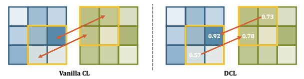

Semi-supervised Semantic Segmentation with Directional Context-aware Consistency - CVPR 2021
Contents
Semi-supervised Semantic Segmentation with Directional Context-aware Consistency - CVPR 2021#
Information
Title: Semi-supervised Semantic Segmentation with Directional Context-aware Consistency, CVPR 2021
Reference
paper : https://jiaya.me/papers/semiseg_cvpr21.pdf (CVPR 2021)
code : https://github.55860.com/dvlab-research/Context-Aware-Consistency
Review By: Chanmin Park
Edited by: Taeyup Song
Last updated on Jan. 5, 2022
Problem statement#
full label을 생성하기에 time-consuming이 많이 듬
기존의 supervised learning은 적은 data로 인해서 overfitting이 많이 일어남 (Fig. 1 참조)
{kind=link}
Fig. 111 1/8 의 label만 사용하여 학습한 model을 GradCAM으로 visualization을 한 결과. (source: arXiv:2106.14133)#
기존의 segmentation은 receptive field의 한계로 인해서 context information에 대해서 학습을 하지 않음.
Contribution#

Fig. 112 Crop1 and Crop2 are randomly cropped from the same image with an overlapping region. (source: arXiv:2106.14133)#
위의 그림과 같이 label이 있는 부분을 overlapping을 해서 patch데이터간의 consistency 를 주어지며 이른 context aware consistency라고 명시함
contextual alignment를 주기 위해서 directional contrastive loss를 제시함 이는 pixel wise로 cosine similarity 주게 되는 방법을 의미함.
데이터의 sampling 하는 새로운 방법을 제시함으로 negative sample와 ambiguous한 postive sample을 filtering함
Related work#
Semi-Supervised Semantic Segmentation with Cross-Consistency Training, CVPR 2020
semi supervised 의 대표적인 방법중에 하나로 permutation 다양하게 부여하여 invaraince를 높임
weakly label이 필요없는 장점이 있음.

Fig. 113 CCT architecture (source: arXiv:2003.09005)#
Proposed Method#
1. motivation#
{kind=link}
Fig. 114 Visual comparison between contextual augmentation (I and II) and low-level augmentation (I and III) (source: arXiv:2106.14133)#
노란색으로 되어진 overlapping region에서 weak augmentation (gaussian noise, color jitter) 했을때와 다른 위치의 patch를 구헀을때의 이미지임
두번째 행에서 보는 바와 feature에서 T-SNE를 적용하면 weak augmentation에서는 feature space가 전혀 바뀌지 않음.
2 Network#

Fig. 115 Overview of framework (source: arXiv:2106.14133)#
label,target image, unlabel image: \(y_t ,x_t,x_u\)
overlapping image(w/label),non overlapping image(wo/label) : \(x_{u1},x_o,x_{u2}\)
project feature : \(\varPhi\)
2.1 Context-aware Consistency#
low level feature projection을 시킨후 upsacaling을 한결과를 label의 영역간의 pixel wise constrative loss를 적용시켜줌
저자는 low level에서 feature를 projection을 시키면 좀더 context에 대해서 학습할수있다고 ablation result를 통해서 보여줌
2.2 Directional Contrastive loss(DC loss)#
기존의 contrastive loss의 경우 MSE를 적용하여주었지만 저자는 cosine simliarity를 통해서 문제를 접근함.
 Fig. 116 Comparison between vanilla CL and DCL (source: arXiv:2106.14133)#
\[l_{dc}^{b}(\phi_{o_1},\phi_{o_2})=-\frac{1}{N}\sum_{h,w}\mathcal{M}_{d}^{h,w}\cdot\log\frac{r(\phi_{o_1}^{h,w},\phi_{o_2}^{h,w})}{r(\phi_{o_1}^{h,w},\phi_{o_2}^{h,w})+\sum_{\phi_n \in \mathcal{F_u}}r(\phi_{o_1}^{h,w},\phi_{n})}\]\[\mathcal{M}_{d}^{h,w}=\mathbf{1}\{\max C(f_{o_1}^{h,w}<\max C(f_{o_2}^{h,w})\}\]\[\mathcal{L}_{dc}^b=l_{dc}^b(\phi_{o_1},\phi_{o_2})+l_{dc}^b(\phi_{o_2},\phi_{o_1})\]
{kind=link}
{kind=link}
식에서 있듯이 overlapping이 된 영역끼지의 cosine similarity를 loss를 줄여줌
반면에 negative pair에 관해서는 분모로 두어서 더 similarity를 멀게 만듬
\(M_d^{h,w}\) 같은 경우 pixel단위로 target되어지는 pixel이 source pixel보다 크면 loss를 계산함.
2.3 sampling Strategies#
negative pair의 양을 조절해야되기때문에 pseudo label에서 negative의 prediction을 값을 통해서 filtering을 함
\[\tilde{y}_{ui}=\arg\max C(f_{ui}) \ \ \ i \in \{1,2\}\]\[l_{dc}^{b,n,s}(\phi_{o_1},\phi_{o_2})=-\frac{1}{N}\sum_{h,w}\mathcal{M}_d^{h,w}\cdot\log\frac{r(\phi_{o_1}^{h,w},\phi_{o_2}^{h,w})}{r(\phi_{o_1}^{h,w},\phi_{o_2}^{h,w})+\sum_{\phi_n \in \mathcal{F_u}}\mathcal{M}_{n,1}^{h,w}\cdot r(\phi_{o_1}^{h,w},\phi_{n})}\]Positive 에서도 prediction의 낮은 값의 경우 \(\gamma\)를 통해서 filtering을 적용하여줌
이러한 방법들을 바탕으로 CAM을 통해서 weak-superivsed도 문제를 접근할수 있음